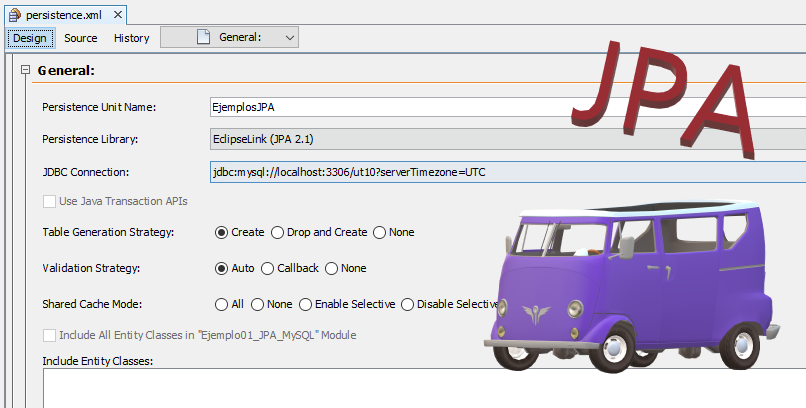

2.4.- Unidades de persistencia (I)

Con JPA aparece un concepto nuevo muy importante, el concepto de unidad de persistencia. La idea de JPA es, como ya se ha explicado, poder almacenar de forma sencilla objetos (y la información que contienen) en un almacén de datos. Pero, ¿qué objetos podrán ser almacenables en dicho almacén? ¿Cómo indico qué objetos podrán ser almacenados y cuáles no? ¿Cómo indico en qué almacén de datos se deberán almacenar los objetos?
Toda esa información es lo que llamamos la unidad de persistencia. Por tanto:
- La unidad de persistencia incluye qué objetos serán persistentes. Estos objetos los llamaremos entidades.
- La unidad de persistencia incluye dónde persistirá la información, es decir, en qué base de datos.
- La unidad de persistencia incluye qué proveedor de persistencia se usará.
Esta información se indica en dos lugares. En primer lugar, en el archivo persistence.xml donde indicaremos parte de la información, y el resto en nuestro código Java. Cada unidad de persistencia tendrá su propia sección en el archivo de configuración persistence.xml, por ejemplo:
<?xml version="1.0" encoding="UTF-8"?>
<persistence version="2.1" xmlns="http://xmlns.jcp.org/xml/ns/persistence" xmlns:xsi="http://www.w3.org/2001/XMLSchema-instance" xsi:schemaLocation="http://xmlns.jcp.org/xml/ns/persistence http://xmlns.jcp.org/xml/ns/persistence/persistence_2_1.xsd">
<persistence-unit name="EjemplosJPA" transaction-type="RESOURCE_LOCAL">
<provider>org.eclipse.persistence.jpa.PersistenceProvider</provider>
<class>minipos.model.LineaTicket</class>
<class>minipos.model.DireccionEnvio</class>
<class>minipos.model.Producto</class>
<class>minipos.model.Ticket</class>
</persistence-unit>
</persistence>Cada unidad de persistencia va definida con la etiqueta <persistence-unit>...</persistence-unit>. En su interior, indicaremos qué configuración debe usarse para conectar a la base de datos, cuál será el proveedor de persistencia a usar, qué clases se podrán hacer persistentes, etc. Solo una porción de esta información debe indicarse aquí de forma obligatoria.
En el ejemplo anterior, se especifica el proveedor de persistencia a usar (<provider>...</provider>), aunque no es obligatorio (si no lo indicamos buscará una implementación en el CLASSPATH). Como proveedor de persistencia se ha usado org.eclipse.persistence.jpa.PersistenceProvider, lo cual nos dice que la implementación de JPA usada en ese caso es EclipseLink.
Además del proveedor de persistencia, en el ejemplo anterior se indica qué objetos serán persistentes, a través de <class>...</class>. Indicar las clases que podrán ser persistentes sí será obligatorio.
Lo mínimo que debemos indicar en la unidad de persistencia es su nombre (name="EjemplosJPA") y las clases que serán persistentes (<class>...</class>).
Pero aquí faltarían cosas todavía para que JPA haga su magia.
- ¿Qué pasa con la información necesaria para conectar a la base de datos?
- ¿Dónde se indica la URL de conexión, el driver, el usuario, el password, etc.?
La verdad es que podremos indicar dicha información en el archivo anterior o bien por medio del programa. Es decir, podemos completar la información de la unidad de persistencia usando etiquetas XML o bien desde nuestro código en Java, sin necesidad de modificar el XML.
¿Y por dónde empiezo ahora?, te preguntarás.
Es sencillo: crea un archivo persistence.xml en la carpeta META-INF siguiendo el modelo anterior y échale un vistazo al ejemplo siguiente. Pero ¡cuidado!, no pongas todavía las clases a persistir (<class>...</class>), eso lo haremos más adelante.
Una aplicación puede necesitar trabajar con datos de diferentes orígenes, por ejemplo, de diferentes bases de datos. Es por ello que podemos tener varias unidades de persistencia en un mismo archivo persistence.xml.
Debes conocer
A continuación te ofrecemos dos proyectos base NetBeans que utilizan JPA con H2 y MySQL respectivamente, y donde la información necesaria para acceder al almacén de datos se proporciona a través del archivo persistence.xml.
Proyecto base tipo 1 que usa JPA con una base de datos H2. (zip - 1.77 MB)
Proyecto base tipo 1 que usa JPA con una base de datos MySQL. (zip - 2246995 B)
Ejercicio Resuelto
La configuración de acceso a la base de datos puede indicarse a través de propiedades en la unidad de persistencia. Fíjate en el siguiente ejemplo, pensado para acceder a una base de datos H2.
<?xml version="1.0" encoding="UTF-8"?>
<persistence version="2.1" xmlns="http://xmlns.jcp.org/xml/ns/persistence" xmlns:xsi="http://www.w3.org/2001/XMLSchema-instance" xsi:schemaLocation="http://xmlns.jcp.org/xml/ns/persistence http://xmlns.jcp.org/xml/ns/persistence/persistence_2_1.xsd">
<persistence-unit name="EjemplosJPA" transaction-type="RESOURCE_LOCAL">
<provider>org.eclipse.persistence.jpa.PersistenceProvider</provider>
<properties>
<property name="javax.persistence.jdbc.url" value="jdbc:h2:./mibasededatos.h2db"/>
<property name="javax.persistence.jdbc.user" value=""/>
<property name="javax.persistence.jdbc.driver" value="org.h2.Driver"/>
<property name="javax.persistence.jdbc.password" value=""/>
<property name="javax.persistence.schema-generation.database.action" value="create"/>
</properties>
</persistence-unit>
</persistence>
¿Serías capaz de modificar el ejemplo anterior para acceder a una base de datos MySQL?